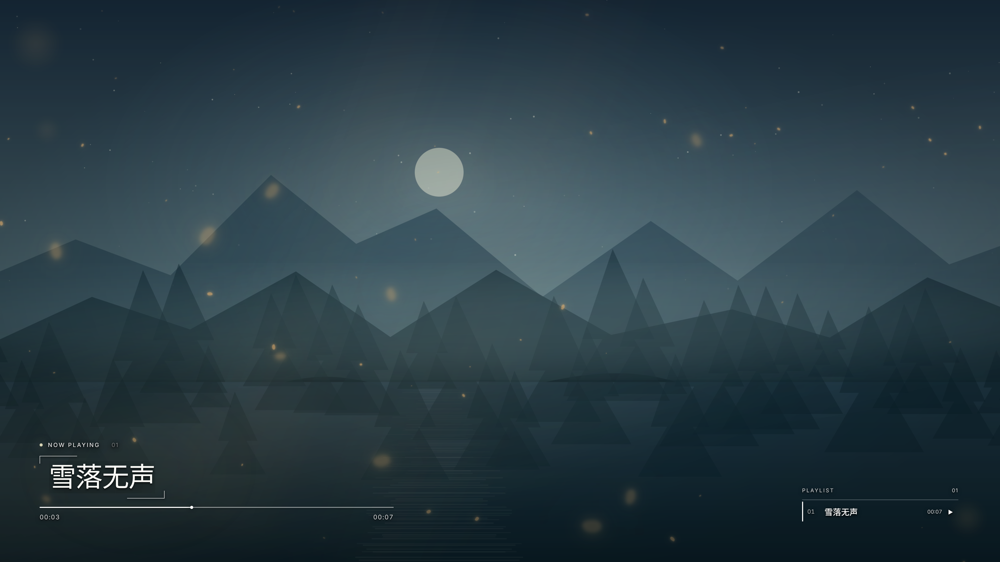
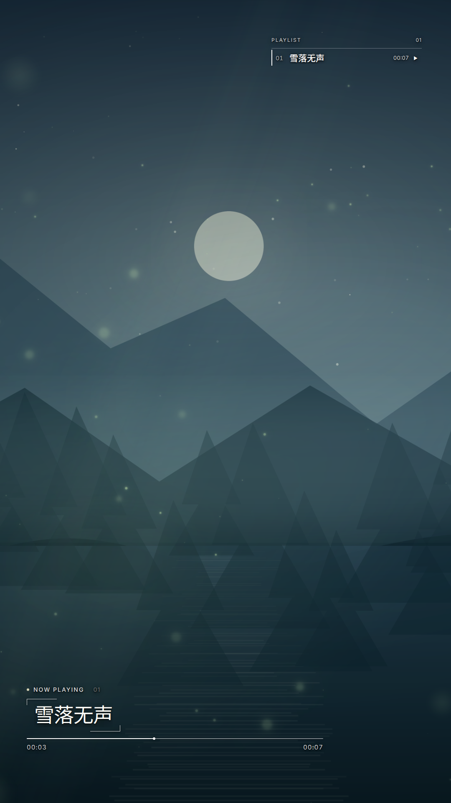
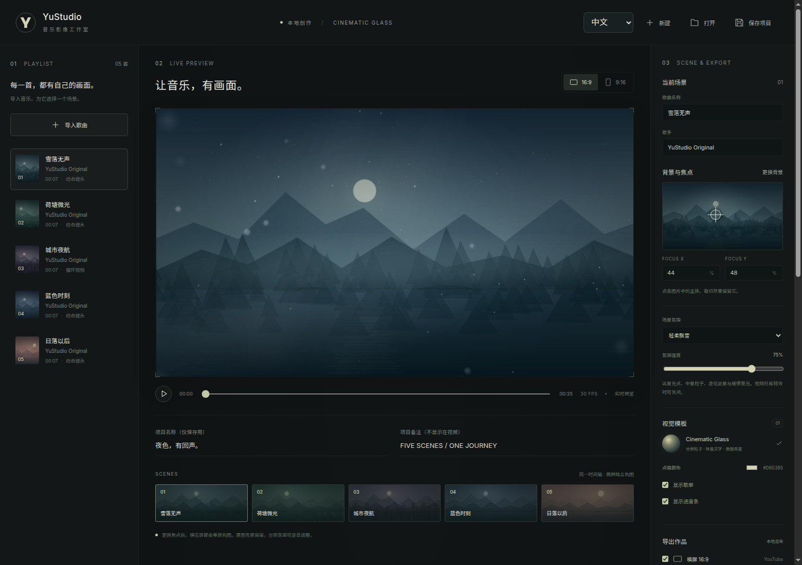

每首歌，都有自己的场景
图片拥有缓慢镜头运动，短视频自动准备循环。点击主体设置焦点，横屏与竖屏各自重新构图。
每一首歌，一个独立场景。用动态背景、轻盈文字和分层氛围，把你的歌单做成值得看完的音乐影像。
v1.3.0 · Windows x64 · 完整解压，双击 YuStudio.exe


保留素材的原本亮度，让文字、运动和氛围恰好够用。
图片拥有缓慢镜头运动，短视频自动准备循环。点击主体设置焦点，横屏与竖屏各自重新构图。
火星、飘雪和萤光，配上虚化前景与缓慢雾光。逐首调整强度，也可关闭，保留背景原有特效。
本机处理素材与生成视频。支持 NVENC、无损背景缓存和并发测速；导出不添加软件品牌或水印。
实时预览、拖拽排序、焦点定位和输出设置。右上角切换中文或英文。

批量添加 MP3、WAV、FLAC、AAC 或 M4A。拖动排序，修改歌曲与歌手信息。
绑定图片或短视频，设置主体焦点和氛围。歌手留空时，成片自动隐藏歌手行。
选择清晰度、帧率、H.264 / H.265。导出视频、项目和 YouTube 章节时间戳。
Windows 包内置 Electron、字体、FFmpeg 和平台组件。完整解压即可运行，无需安装 Node.js。首次导出需要联网下载 Chromium；准备完成后可离线处理本机素材。桌面包未使用商业代码签名证书。
可以。项目格式保持兼容。YuStudio 首次启动时，若没有自己的素材库，会检查并继续使用旧版用户目录。保留原数据目录，或通过“打开”选择原来的项目 JSON。
并发测速和无损缓存保持当前分辨率、帧率、码率与特效。编码档位可能改变压缩效率或质量，固定码率时尤其明显。高并发和高占用不保证更快；NVENC 负责视频编码，画面由 Chromium 生成。介绍页不承诺特定显卡的提速倍数。
本项目代码采用 MIT，原创演示背景与音频采用 CC0。第三方组件保留各自许可；渲染使用 Remotion，商用或团队使用请确认其适用条款。请使用拥有相应权利的歌曲与背景。